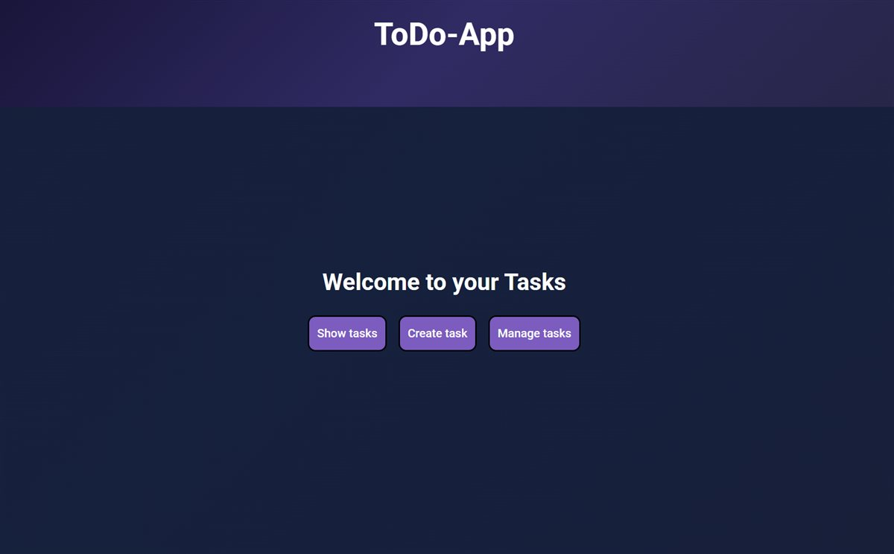
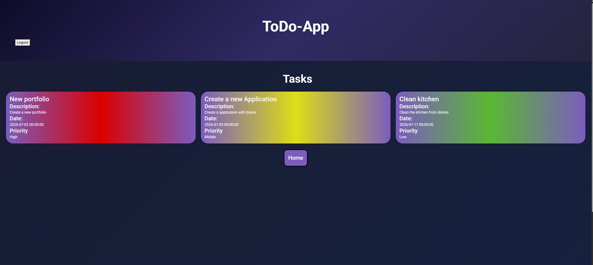
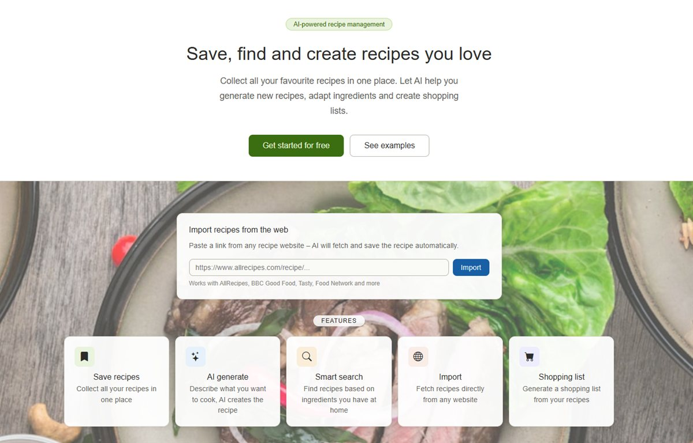
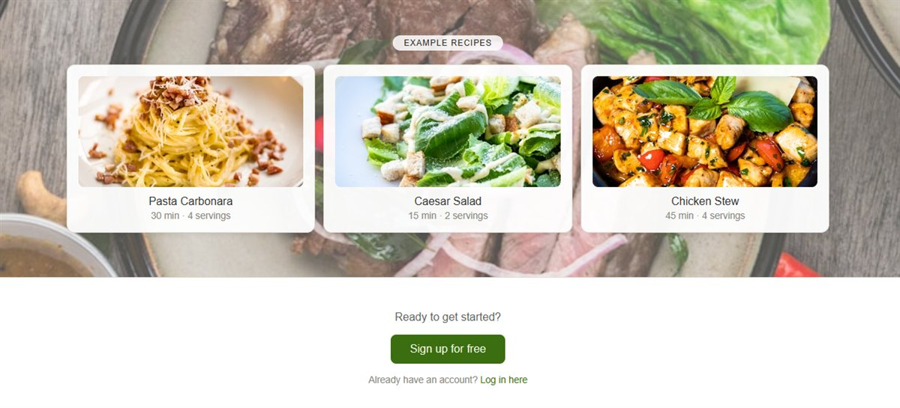
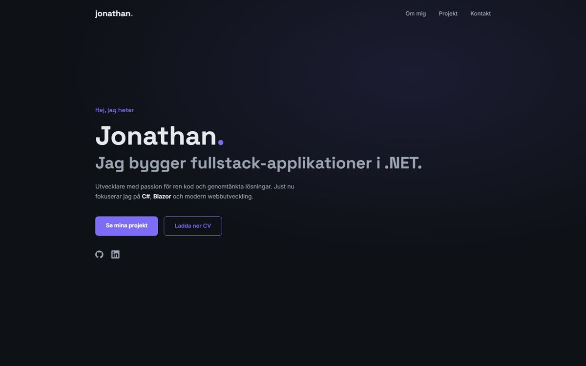

ToDo-App
Fullstack todo-app byggd i Blazor med användarkonton via ASP.NET Core Identity — inloggning, tvåfaktorsautentisering och kontohantering — samt ett separat backoffice-projekt.
Hej, jag heter
Utvecklare med passion för ren kod och genomtänkta lösningar. Just nu fokuserar jag på C#, Blazor och modern webbutveckling.
Jag är en utvecklare som gillar att förvandla idéer till fungerande produkter. Min resa började med webben och har vuxit till ett brett intresse för allt från backend-arkitektur till användarupplevelse.
När jag inte kodar hittar du mig förmodligen med en kopp kaffe och ett nytt sidoprojekt på gång. Jag tror på att lära genom att bygga — och på att bra kod är kod som andra förstår.
Ett urval av saker jag byggt. Fler finns på min GitHub.


Fullstack todo-app byggd i Blazor med användarkonton via ASP.NET Core Identity — inloggning, tvåfaktorsautentisering och kontohantering — samt ett separat backoffice-projekt.


Receptapp med AI-stöd, byggd som Blazor Web App (server + WebAssembly-klient) enligt Clean Architecture med EF Core och SQL Server.

Den här sidan! Ren HTML/CSS/JS med scroll-animationer via IntersectionObserver — inget ramverk, inget build-steg.
Har du en fråga, ett projekt eller vill bara säga hej? Min inkorg är alltid öppen.
Skicka ett mejl